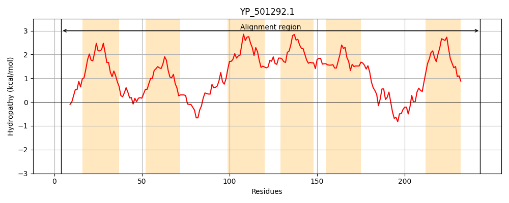
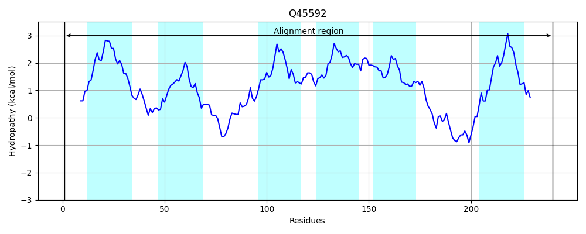
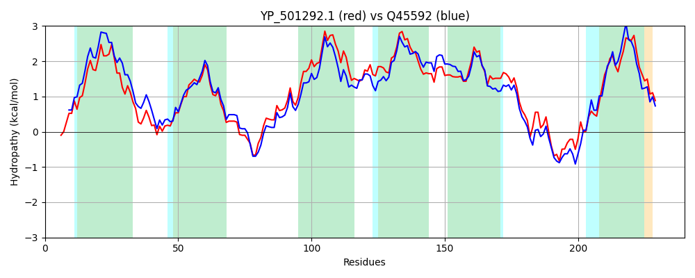

Hit Accession: Q45592
Hit TCID: 3.A.1.133.1
Hit Description: gnl|BL_ORD_ID|13636 gnl|TC-DB|Q45592|3.A.1.133.1 YydJ protein - Bacillus subtilis.
Mach Len: 240
e:0.000000
Query TMS Count : 6
Hit TMS Count: 6
TMS-Overlap Score: 6.200000
Predicted Substrates:CHEBI:7990;peptide
BLAST Alignment:
Score: 807 , Bit scores: 315 bits, E-value: 8.7e-110, Alignment length: 240, Percentage identity: 62
Query: 4 LKLEFKKSISNKIIYTLVVLFTFLFLLGYFLPIGIDKVKSLSYSQFFFSSYTVATQLGFLLFSFVIAYFINKEYSNKNILFYKLIGDNIFTFFYKKVAVLFFECLVFIILSITIISIIYSDFSHYLLLIILFSLVILQYILVVGTISMVSPNILISLGISIVYWIGSVILVAINKNIFGIVAPFEASNTMYRAVEKILNNESTFMCPTEIINIVSFFVLLFIVNTIVLLLSRKRWLKIGM 243
+KLEFKKSISNK+I L +F FLFLLGYFL +GIDKV +++ FFFSSYTVATQ G +LFSFVIA+FIN+EYSNKNILFYKLIG+NI+TFFYKK+AVLF EC FI L + IIS++Y DFSH+ LL+ LFS VILQYIL++GTIS++ PNILIS+G+SIVYW+ SVILVAI+ FG +APFEA NTMY +E++L +++ + +++ I+ + V + I+N IVL S+ RW+K+G+
Sbjct: 1 MKLEFKKSISNKVIIILGAMFVFLFLLGYFLLVGIDKVSNVTPEMFFFSSYTVATQFGLMLFSFVIAFFINREYSNKNILFYKLIGENIYTFFYKKIAVLFLECFAFITLGLLIISLMYHDFSHFALLLFLFSAVILQYILIIGTISVLCPNILISIGVSIVYWMTSVILVAISNKTFGFIAPFEAGNTMYPRIERVLQSDNMTLGSNDVLFIILYLVSIIIINAIVLRFSKTRWIKMGL 240 | Protein Hydropathy Plots: |
|---|
|  |  |
Pairwise Alignment-Hydropathy Plot:
|
|---|
|  |